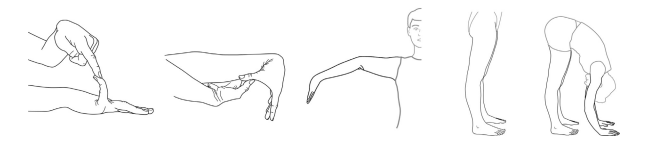

Qu’est ce que le Syndrome d’Ehlers Danlos?
Les syndromes d’Ehlers-Danlos (SED en abrégé) sont un groupe de pathologie génétiques héréditaires
affectant la production de collagène, une protéine qui donne l’élasticité et la force aux tissus
conjonctifs tels que la peau, les tendons, les ligaments, ainsi que les parois des organes et des
vaisseaux sanguins.
On peut le considérer le tissus conjonctif comme une substance fondamentale dans laquelle baignent
tous les organes. C’est un élément de remplissage et de soutien, mais également un messager des
activités nerveuses.
On estime qu’il représente environ 80% du corps humain, ce qui explique que le SED affecte la quasi
intégralité du corps humain et que les symptômes présentés soient aussi multiples et variés.
Le SED est décrit comme génétiquement hétérogène. Cela signifie que le SED peut provenir d’une mutation (parmi toute une gamme de mutations possibles) dans l’un des nombreux gènes liés au tissu conjonctif.Ce dernière est aussi très hétérogène au niveau de sa clinique ce qui signifie qu’on observe une variabilité phénotypique très importante, les médecins rencontrant ainsi des signes et des symptômes extrêmement variés chez les patients SED, et d’intensités variées. Dans certains cas, les symptômes resteront d’intensité modérés alors que pour d’autre ils seront une source de handicaps importants.
La plupart des formes du syndrome d’Ehlers-Danlos sont à transmission autosomique dominante. Un parent porteur de la mutation responsable de la maladie a donc 50% de chances de transmettre la maladie à chacun de ses enfants. Certains cas apparaissent aussi par des mutations spontanées.
Les études génétiques ont déterminés plusieurs sous-types de SED.
Même s’il paraît approprié de parler DES syndromes d’Ehlers-Danlos, tous ces types partagent des
caractéristiques communes : une hypermobilité articulaire, des modifications cutanées, une asthénie,
des douleurs chroniques. On pourrait donc considérer l’existence d’UN SED qui aurait des
manifestations (cutanées, articulaires, vasculaires, oculaires…) plus ou moins marquées en fonction
du mécanisme pathogénique sous-jacent.
Pour des questions de compréhension, il est parfois plus simple de parler du SED, au singulier. Cela
ne nie en rien l’existence des différents sous-types de SED et leurs spécificités.
Depuis les 20 dernières années, de nouvelles variantes rares de SED ont été identifiées.
Le consortium international répertorie 13 types de SED, déterminés selon le type de modifications
génétiques relevées et selon les gènes touchés (19 gènes au moment de la publication en 2017).
Chacun des sous-types de SED a des traits spécifiques, mais ces sous-types ont également des
caractéristiques communes à tous les sous-types de SED telles que l’hypermobilité articulaire, la
fragilité des tissus, la douleur chronique et la fatigue chronique.
Il est parfois impossible de différencier cliniquement les types de SED tellement les phénotypes
(signes cliniques) se chevauchent. Certains sont très rares et touchent seulement quelques dizaines
ou centaines de personnes.
Le diagnostic du SEDh repose aujourd’hui sur un diagnostic clinique puisqu’il n’existe pas encore de
test génétique fiable, en l’absence de base moléculaire connue. Les gènes responsables des mutations
présentes dans d’autres sous-types de Syndrome d’ehlers Danlos (14 au total) ont été trouvés ces
dernières années, mais ceux responsables de la forme hypermobile sont en cours de recherche.
Cette absence de test fiable pour le moment reflète probablement l’hétérogénéité génétique dans le
cadre du SEDh.
Afin de réduire l’hétérogénéité et de faciliter la recherche des causes génétiques sous-jacentes au SEDh, les critères diagnostiques de New-York 2017 sont plus stricts que les précédents critères de Villefranche et de Brighton.
Ci-dessous les critères de New-York pour le SEDh traduits du consortium international dans l’American Journal of Medical Genetics de mars 2017.
Critère 1 – L’hypermobilité articulaire généralisée
L’hypermobilité articulaire généralisée est évaluée par le biais du score de Beighton.
L’examen consiste en 5 manoeuvres cotées sur 9 points : plus le score est élevé, plus la laxité est
grande.
1. Dorsiflexion passive des auriculaires (5ème doigt) au-delà de 90° – 1 point pour chaque main
2. Apposition passive des pouces sur les fléchisseurs de l’avant-bras – 1 point pour chaque pouce
3. Hyperextension du coude au-delà de 10° – 1 point pour chaque coude
4. Hyperextension du genou au-delà de 10° – 1 point pour chaque genou
5. Flexion du tronc vers l’avant avec les genoux complètement étendus de sorte que les paumes de
main peuvent reposer à plat sur le sol – 1 point.

Le cas échéant, l’amplitude des mouvements est mesurée à l’aide d’un goniomètre, un instrument qui
mesure l’angle de l’articulation.
L’hypermobilité articulaire généralisée est validée selon les seuils de score suivants :
SI le score de Beighton est inférieur d’un point : le questionnaire 5QP doit être positif,
soit au moins 2 réponses positives sur 5.Le questionnaire 5QP, créé par Hakim et Graham en 2003,
comprend cinq questions, y compris des informations actuelles et historiques sur l’hypermobilité
articulaire généralisée.
1. Pouvez-vous aujourd’hui (ou avez-vous déjà pu) poser vos mains à plat sur le sol sans plier les
genoux ?
2. Pouvez-vous maintenant (ou avez-vous déjà pu) plier votre pouce pour toucher votre avant-bras ?
3. Enfant, amusiez-vous vos amis en contorsionnant votre corps dans des positions étranges, ou
pouviez-vous faire le grand écart ?
4. Enfant ou adolescent, votre épaule ou votre genou se sont-ils luxés plus d’une fois ?
5. Vous considérez-vous avec des articulations hyperlaxes ?
SI le score de Beighton est inférieur d’un point et que cela est justifié, il est recommandé de considérer ATM, Épaules, Hanches, Pieds plats, Poignets, Chevilles, autres doigts de la main.
Critère II – La clinique générale et les antécédents : A+B ou A+C ou B+C ou A+B+C
A – Signes cliniques : au moins 5 points sur 12 nécessaires
B – Antécédents familiaux de SEDh au premier degré : 1 ou davantage
Un ascendant ou descendant au premier degré, au minimum, répond aux critères de New-York pour le
SEDh, c’est-à-dire que le parent (père/mère) ou l’enfant de la personne examinée doit répondre
positivement lui-même aux critères de New-York.
C – Atteintes musculo-squelettiques : au moins 1 point sur 3
Critère III – Critères d’exclusion : 3 points nécessaires sur 3
Il ne faut pas de :
Pour évoquer le SEDh, il faut :
Remarques du consortium international
Les comorbidités
Beaucoup d’autres caractéristiques sont décrites dans le SEDh mais la plupart ne sont pas
suffisamment spécifiques ou sensibles à l’heure actuelle pour être incluses dans les critères
formels du diagnostic. Cela inclut de façon non exhaustive : les troubles du sommeil, la fatigue, le
POTS, les troubles gastro-intestinaux fonctionnels, la dysautonomie, l’anxiété et la dépression. Ces
autres manifestations systémiques peuvent être plus incapacitantes encore que les symptômes
articulaires, entravent souvent la fonctionnalité et la qualité de vie, et doivent toujours être
déterminées lors des consultations cliniques.
Même si ces comorbidités ne font pas partie des critères diagnostiques, la présence de ces manifestations doit faire s’interroger sur un éventuel SEDh.
Remarques sur le score de Beighton
L’utilisation du système de notation Beighton est censée être une méthode de dépistage. Il est
entendu que le sexe, l’âge, l’ethnicité, la musculation, les exercices d’étirement et d’échauffement
affectent toutes les Hypermobilités Articulaires (HA) et donc l’Hypermobilité Articulaire
Généralisée (HAG). Cependant, la surcompensation musculaire, les blessures et la chirurgie peuvent
provoquer tout autant une hypermobilité articulaire qu’une hypomobilité. La surcompensation
musculaire, comme les ischio-jambiers tendus, peut affecter le degré d’extension du genou et la
flexion lombaire de façon négative, tandis que les exercices d’étirement et de réchauffement le font
de façon positive. Les blessures peuvent déstabiliser une articulation ou réduire le mouvement. La
chirurgie peut également affecter une articulation. Par exemple, une personne avec une fusion de la
colonne lombaire peut ne pas être capable d’avoir une flexion vertébrale « positive » vers l’avant
pour le score de Beighton.